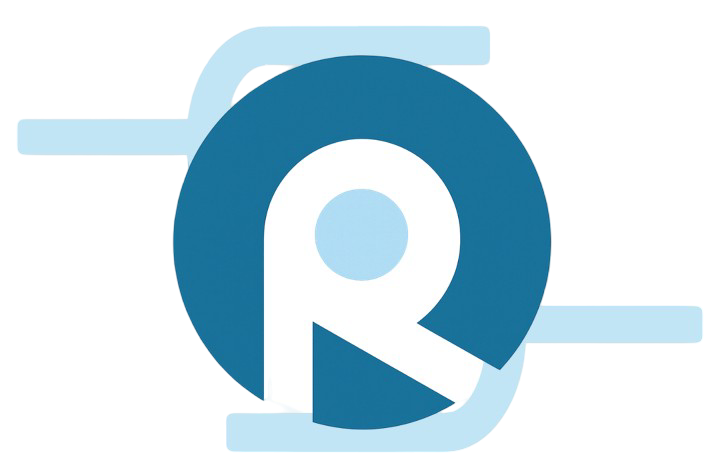
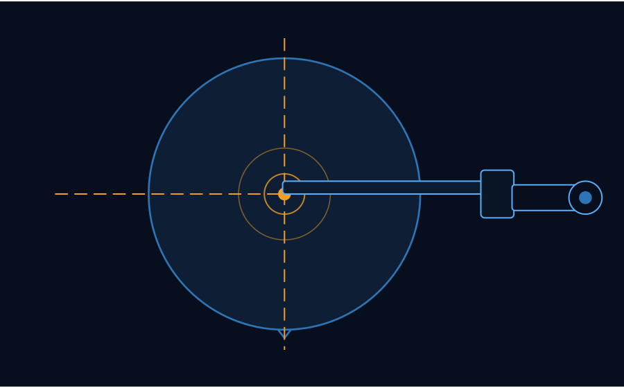
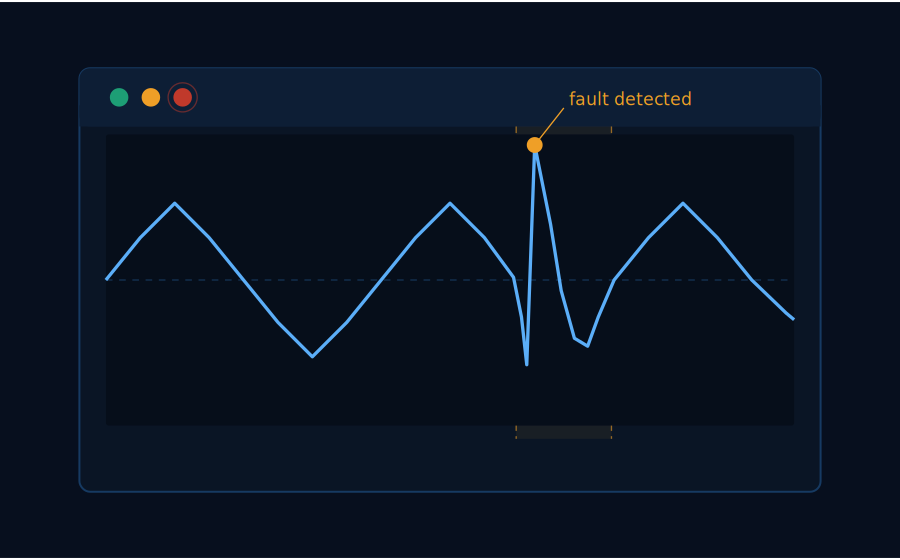
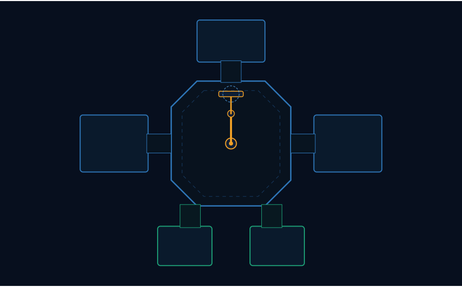

Vacuum Transfer Robot Services · Singapore
SemiRobotics Consulting delivers precision calibration, alignment, troubleshooting and consulting for vacuum transfer robot systems in semiconductor front-end process equipment.

Core Capabilities
Specialist services for VTR systems, delivered by engineers with direct hands-on experience in vacuum and controlled-atmosphere process environments.

Precise geometric setup and verification of robot kinematics, end-effector positioning, and station teach points within process tool environments. Performed to OEM specifications across atmospheric and vacuum platforms, with full traceability.

Structured fault isolation and root cause analysis for mechanical, electromechanical, and motion control failures. Systematic, methodology-driven response — from symptom characterisation through to resolution — to minimise tool downtime.

Engineering advisory services for OEMs and end users covering system integration, performance assessment, and maintenance programme development. Grounded in direct field experience with deployed vacuum transfer robot systems.
Why SemiRobotics
Deep Vacuum Process Knowledge
Our engineers have extensive hands-on experience working within high-vacuum and controlled-atmosphere environments. We understand how process conditions — pressure, temperature, gas chemistry — interact with robot mechanics, bearings, and motion control systems. This system-level understanding informs every calibration, diagnosis, and recommendation we make.
Rapid Turnaround
Tool downtime in semiconductor manufacturing has a direct impact on production yields and delivery schedules. SemiRobotics Consulting prioritises rapid mobilisation and structured, time-efficient workflows to return systems to operational status as quickly as technically possible.